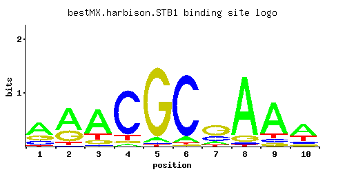

STB1
YNL309W
Protein with a role in regulation of MBF-specific transcription at Start, phosphorylated by Cln-Cdc28p kinases in vitro; unphosphorylated form binds Swi6p and binding is required for Stb1p function; expression is cell-cycle regulated
Best-performing DNA-binding model.

View and copy the recommended matrices ↘
A | 0.540 0.597 0.683 0.043 0.062 0.080 0.133 0.861 0.740 0.558 C | 0.199 0.012 0.050 0.810 0.019 0.874 0.243 0.028 0.081 0.107 G | 0.229 0.315 0.114 0.055 0.904 0.020 0.548 0.089 0.076 0.099 T | 0.033 0.076 0.153 0.091 0.014 0.024 0.076 0.022 0.104 0.236
A | 54 59 68 4 6 8 13 86 74 55 C | 19 1 5 81 1 87 24 2 8 10 G | 22 31 11 5 90 2 54 8 7 9 T | 3 7 15 9 1 2 7 2 10 23
A | 0.52 0.62 0.76 -2.01 -1.64 -1.39 -0.88 0.99 0.84 0.56 C | 0.10 -2.71 -1.28 1.50 -2.25 1.58 0.30 -1.86 -0.80 -0.52 G | 0.24 0.56 -0.46 -1.19 1.61 -2.20 1.11 -0.70 -0.86 -0.60 T | -2.27 -1.44 -0.74 -1.26 -3.13 -2.59 -1.44 -2.68 -1.12 -0.30
Alternative candidate matrices 3
Historical matrix candidates from the original ScerTF database. Expand a source to inspect its original logo, scores, and matrix values.
STB1Foat et. al.P = 1View matrix ↘
STB1Macisaac et. alP = 2.64e-11View matrix ↘
STB1Pachkov et alP = 5.67e-11View matrix ↘
Gene-level annotations and interactions.
Genes bound in ChIP-chip experiments 89 genes
YAL022C, YBR057C, YBR060C, YBR147W, YBR294W, YCR064C, YCR065W, YDR309C, YDR366C, YDR368W, YDR451C, YDR452W, YDR500C, YDR501W, YDR511W, YEL040W, YER083C, YFL059W, YFL060C, YFR010W, YFR011C, YFR017C, YFR043C, YGR063C, YGR109C, YGR109W-A, YGR109W-B, YGR221C, YGR277C, YGR278W, YHR061C, YHR138C, YHR149C, YHR150W, YHR153C, YHR154W, YIL040W, YIL066C, YIL082W, YIL083C, YIL140W, YIL141W, YJL140W, YJL141C, YJL142C, YJL188C, YKL096W-A, YKL097C, YKL142W, YKR022C, YKR023W, YLR251W, YLR252W, YLR342W, YML038C, YML041C, YMR179W, YMR199W, YMR306C-A, YMR307W, YNL289W, YNL300W, YNL301C, YOL007C, YOR138C, YOR140W, YOR246C, YOR247W, YOR248W, YOR294W, YOR372C, YOR373W, YPL001W, YPL002C, YPL045W, YPL046C, YPL047W, YPL051W, YPL056C, YPL097W, YPL098C, YPL163C, YPL184C, YPL251W, YPL253C, YPL255W, YPL256C, YPR044C, YPR047W
Genes affected by TF deletion 146 genes
YDR034W-B, YDR008C, YER143W, YER145C, YGL169W, YKR073C, YKR075C, YMR010W, YMR045C, YOR192C-A, YAL068C, YNL207W, YNL275W, YPL015C, YPL017C, YOR381W, YPL021W, YHL047C, YNR056C, YPL240C, YGL010W, YMR189W, YNL240C, YPL016W, YOR382W, YDL035C, YDR128W, YDR527W, YLL028W, YLR374C, YOL136C, YOR285W, YOR347C, YPL270W, YBR289W, YER028C, YBR129C, YHR024C, YLL027W, YKR104W, YOR316C, YDL191W, YDR281C, YLR183C, YMR315W, YMR316C-B, YBR010W, YOR203W, YOR389W, YDR147W, YCL064C, YJR061W, YOR202W, YJR148W, YDL075W, YHR120W, YHR155W, YDL009C, YFR013W, YJL217W, YNL309W, YNL311C, YPL154C, YBR101C, YBR105C, YDR534C, YGR036C, YMR138W, YOL143C, YOR298C-A, YBR296C, YMR317W, YMR321C, YNL310C, YER060W, YDR084C, YDR414C, YFL001W, YJR096W, YKR093W, YLR232W, YNL065W, YOL002C, YPL257W-A, YDR345C, YBR175W, YBR207W, YGL055W, YKL096W, YOR049C, YOR081C, YOR019W, YBR088C, YAR029W, YDL115C, YDR209C, YGL058W, YFR053C, YGR137W, YGR019W, YHR037W, YOL158C, YOR383C, YBR269C, YDL238C, YDL210W, YGR200C, YKL153W, YLR136C, YML070W, YMR300C, YMR304C-A, YDL049C, YDR481C, YFL060C, YIR012W, YLL012W, YOR301W, YPR135W, YBL042C, YLR167W, YML069W, YDR090C, YHR018C, YHL040C, YJR074W, YLR299W, YDL088C, YEL065W, YHR170W, YJL079C, YKL103C, YLR050C, YHR013C, YMR062C, YMR034C, YMR007W, YBR244W, YJL076W, YDR122W, YLR180W, YBR089W, YOR306C, YNL007C, YNL324W, YPL169C
Genes supported by both experiments 1 genes
YFL060C
Predicted TF–TF partners 13 genes
ABF1, FKH1, FKH2, MBP1, MET28, RDR1, RDS1, SKN7, STB2, STB3, SUT1, SWI4, SWI6